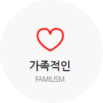

기업문화
캐논코리아컨슈머이미징㈜은 전 직원이 공통의 목표를 향해 서로 도와가며 함께 정진하는 한 가족이라고 생각합니다.
성과 창출 시에는 이에 대해 보상하고 어려울 때는 개선의 기회를 적극 제공하여 함께 발전해 나가는 공동체의 모습을 지향합니다.
이러한 Familism의 철학은 예의, 규율, 정직을 중시하는 Discipline의 철학을 밑거름으로 했을 때 더욱 공고해 질 것입니다.

Lifelong Employment를 통해 서로를 가족처럼
여기며 삶을 영위하는 것

질서와 윤리의식을 바탕으로 개인의 성장과 조직의
발전을 건전하게 이루어 내는 것